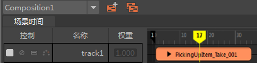
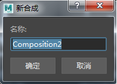
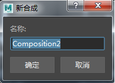
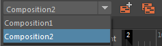
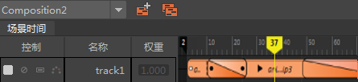

时间编辑器中的合成可用于在 Maya 场景内创建多个版本的时间编辑器，允许您试用相同动画的不同版本。假设将某个片段（例如，集上录制的胶片的一个瞬间）与剪辑室中的其他片段组合在一起，制成一部影片。合成类似于同一部影片的不同版本。您可以在场景中创建合成并在它们之间切换，可创建总体动画的不同版本。
在驱动场景对象而非使用动画源时，每个合成作为一个独特的世界。

活动的合成始终显示在时间编辑器的左上角。
注： 同一时刻只能有一个合成处于活动状态。
若要创建合成，请执行以下操作：
- 在时间编辑器工具栏中，单击
 。
此时将显示“新合成”(New composition)窗口。
。
此时将显示“新合成”(New composition)窗口。 - 输入新合成的名称，然后单击“确定”(OK)。新合成将显示在“合成”(Composition)下拉列表中。

- 将新动画导入到第二个合成中。可以将对象拖放到时间编辑器名单，以便在时间视图上创建片段。

同样，可以创建多个合成并将不同的动画添加到每个合成。您可以在每个合成之间切换，查看用于定义不同动画的名单。
 按钮。有关如何对在
按钮。有关如何对在